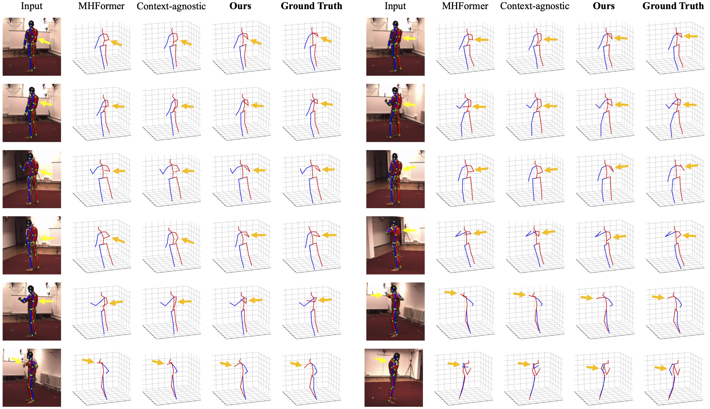
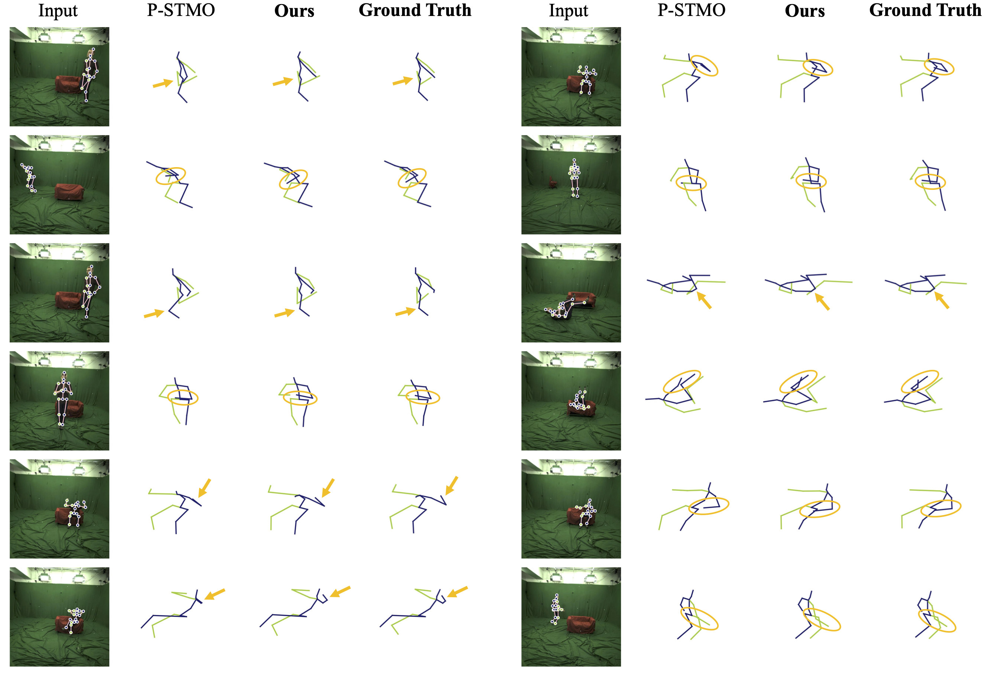
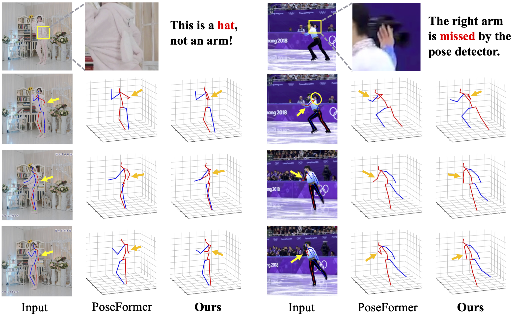

A Single 2D Pose with Context is Worth Hundreds
for 3D Human Pose Estimation
Poster

Abstract
The dominant paradigm in 3D human pose estimation that lifts a 2D pose sequence to 3D heavily relies on long-term temporal clues (i.e., daunting number of video frames) for improved accuracy, which incurs performance saturation, intractable computation and the non-causal problem. This can be attributed to their inherent inability to perceive spatial context as plain 2D joint coordinates carry no visual cues. To address this issue, we propose a straightforward yet powerful solution: leveraging the readily available intermediate visual representations produced by off-the-shelf (pre-trained) 2D pose detectors -- no finetuning on the 3D task is even needed. The key observation is that, while the pose detector learns to localize 2D joints, such representations (e.g., feature maps) implicitly encode the joint-centric spatial context thanks to the regional operations in backbone networks. We design a simple baseline named Context-Aware PoseFormer to showcase its effectiveness. Without access to any temporal information, the proposed method significantly outperforms its context-agnostic counterpart, PoseFormer [1], and other state-of-the-art methods using up to hundreds of video frames regarding both speed and precision.
Framework

A comparison between previous methods (a) and our method (b) at a framework level. Previous methods discard the learned representations produced by 2D pose detectors and heavily rely on long-term temporal information. We retrieve such visual representations and engage them in the lifting process. We selectively extract joint-context features from feature maps, enabling our single-frame model to outperform video-based models with extremely large frame number. Note that we do not fine-tune the feature maps on the 3D task.
Method Overview

An overview of Context-Aware PoseFormer. Stage 1 (left): The 2D pose detector estimates the 2D pose, with a set of feature maps as byproducts. In Stage 2 (right), we extract informative join-context features from such feature maps using deformable operations, and subsequently fuse them with the 2D pose embedding that encodes the positional information of human joints.
Quantitative Results

Our single-frame method outperforms both non-temporal and temporal methods that use up to 351 frames on Human3.6M.
Qualitative Results
Qualitative comparison with MHFormer (351 frames) [2] and our context-agnostic counterpart (please refer to Sec. 4.3 in the paper for more details) on Human3.6M. Our method obtains reliable results despite severe self-occlusion, which may cause false 2D joint detection. Notable parts are indicated by arrows.
Qualitative comparison with P-STMO (81 frames) [3] on MPI-INF-3DHP. Our method infers correct results given rare poses (e.g., the subject is lying on the ground and relaxing on the couch). Notable parts are indicated by arrows or circles.
Comparison with PoseFormer [1] on in-the-wild videos. The 2D pose detector fails to localize 2D joints, given confusing clothing (left) and severe self-occlusion (right). Our method is more robust in such hard cases. False joint detection is indicated by yellow arrows, and the corresponding 3D joint estimation is indicated by orange arrows.
Paper
Qitao Zhao, Ce Zheng, Mengyuan Liu, Chen Chen.
In NeurIPS 2023
@inproceedings{
zhao2023contextaware,
title={A Single 2D Pose with Context is Worth Hundreds for 3D Human Pose Estimation},
author={Zhao, Qitao and Zheng, Ce and Liu, Mengyuan and Chen, Chen},
booktitle={Thirty-seventh Conference on Neural Information Processing Systems},
year={2023},
}
References
[1] Ce Zheng, Sijie Zhu, Matias Mendieta, Taojiannan Yang, Chen Chen, and Zhengming Ding. 3d human pose estimation with spatial and temporal transformers. In Proceedings of the IEEE/CVF International Conference on Computer Vision (ICCV), pages 11656–11665, October 2021.
[2] Wenhao Li, Hong Liu, Hao Tang, Pichao Wang, and Luc Van Gool. Mhformer: Multi-hypothesis transformer for 3d human pose estimation. In Proceedings of the IEEE/CVF Conference on Computer Vision and Pattern Recognition (CVPR), pages 13147–13156, June 2022.
[3] Wenkang Shan, Zhenhua Liu, Xinfeng Zhang, Shanshe Wang, Siwei Ma, and Wen Gao. P-stmo: Pre-trained spatial temporal many-to-one model for 3d human pose estimation. In Computer Vision–ECCV 2022: 17th European Conference, Tel Aviv, Israel, October 23–27, 2022, Proceedings, Part V, pages 461–478. Springer, 2022.
Acknowledgements
The work was done while Qitao was a research intern mentored by Chen Chen. Qitao acknowledges the insightful advices from co-authors and NeurIPS'23 reviewers. The webpage template is adapted from POP.